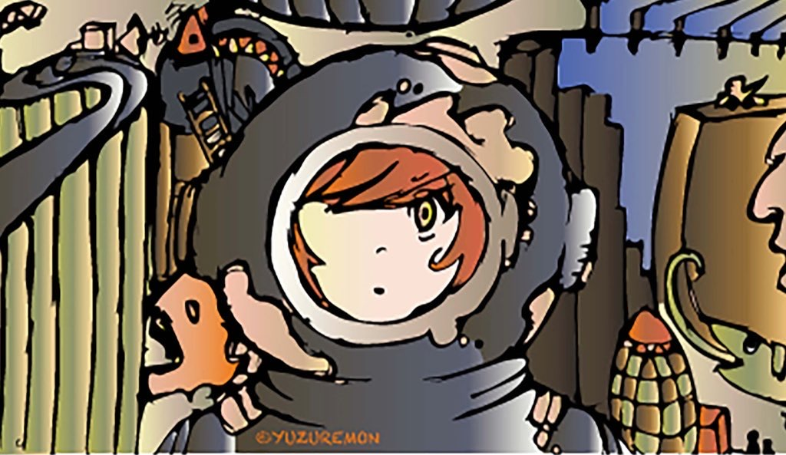

✒︎Profile
✒︎知らなすぎた高校時代
イラストレーターになった原因でもあることですが。
TVやあらゆるメディアから隔離されて生活していたので、高校の時までアイドルグループ『嵐』や俳優の名前も、日本の首相や天皇陛下の名前も知りませんでした。
うちがTVの買えない家なら仕方がなかったんですが、親だけがドラマやバラエティ番組を隠れて見ていたことを知ったときにかなりショックでした。
自分だけが何も知らずに生きていたのかと。
でも、絵だけはずっと描いてきたので、高校を卒業したらすぐにプロになれると信じて、漫画家の道に進もうと考えた...のですが。
やっぱりTV番組や雑誌、特にマンガ。それらを知らなかったので、自分の絵の下手さに気づかなかった。
井の中の蛙状態だったわけです。
メディアを『害』のようにいう人もいますが、隔離された度が過ぎる生活を送っていると、ボクのように高卒まで何もわからない人間になってしまうので注意して欲しいと思います。
親の仕打ちのせいにはしたくありませんが、こればかりはそう言わざるを得ないですね。
✒︎漫画の勉強をするため、専門学校へ
✒︎勘違いして入った学科で少しづつイラストを描くようになる

やっぱり漫画といえば画力向上。
漫画やアニメのようなイラストを描きたいと思い、イラストレーション科があるWEBデザイン学科に入りました。
でも僕の描く絵は漫画やアニメのそれとは違いました。
なので、デザイン志向のイラストレーション科を選んで正解だったと、今では思います。
✒︎漫画学科の中にイラストレーションコースがあった？？
イラスト科があるオススメの場所を紹介され、その学科に入ったのですが、そこは絵を描くというよりは、企業訓練をするような感じでした。
絵をたくさん描くと思っていたのですが、WEBや企業のアイディアを考える授業内容でしたね。
でも、卒業して、WEBデザインができることの強みを知ることができました。
ほとんど独学だと言いましたが、記号や数字の意味がわからなければ独学もできません。
だから専門学校に行った意味はあるのかなと思います。
✒︎卒業後
お墓などなどがあると思い、北海道へ。
そこでイラストレーターを始めました。
田舎でもできます。
✒︎プロフィール
以上がプロフィールです。
ご質問などは『contact』のメッセージフォームへどうぞ。
ではまた（´-`）.｡oO！